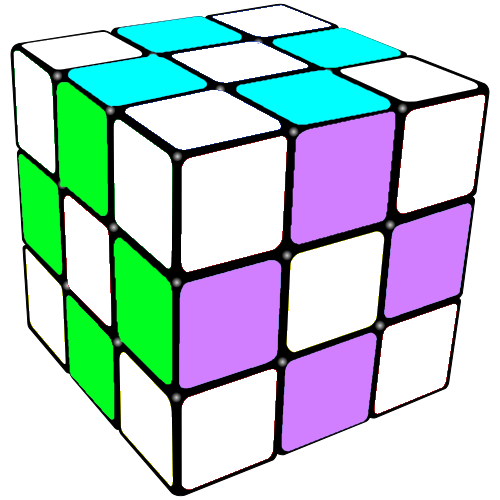
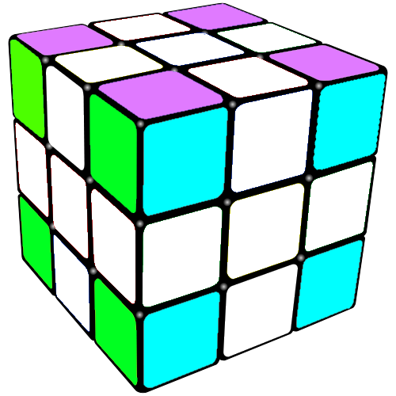
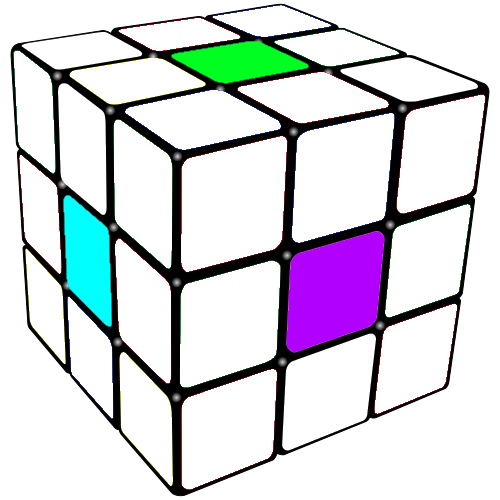
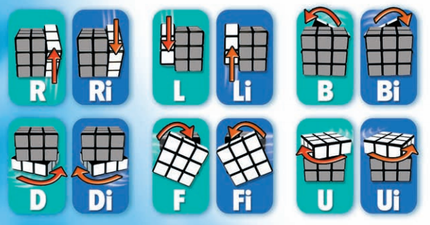
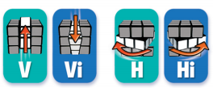

Guide
the rubik's cube parts
edge pieces
these pieces are always inbitween 2 corner pieces and have 2 colors |
 |
corner pieces
The corner pieces have 3 colors and are located on the corner |
 |
center pieces
the center piece represent the color's sude THEY WILL NOT
MOVE FROM THER PLACEMENT!!!
note:
the color Opposits!
| White |
Opposit of |
Yellow |
| Orange |
Opposit of |
red |
| green |
Opposit of |
blue |
ALWAYS HAVE ONE FACE FACING YOU !!CRITICAL!!
|
 |
rubik movments

 |